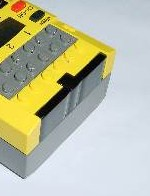

|
|
Start of Tutorial > Start of Trail |

The IR Interface located at the front of the RCX serves the purpose of receiving and
sending infrared data from resp. to the LEGO® Tower or another RCX.
All changeable data like the firmware, programs or commands from the PC to the RCX are
transmitted that way.
Having the advantage of making the RCX independent of any cable stuff, the deranged
communication between the IR tower and the RCX when the interface goes out of scope of the tower
is the major drawback of such a solution.
josx.rcx.platform.Serial.
Serial is static; hence a typical call would be
Serial.setRangLong();
public static void setRangeLong()public static void setRangeShort()
Note that the Serial class can only be used on the RCX!
If you want to send or receive data on the IR Tower, consult the according
communication trail.
Serial is intended to be used for transmission of byte data, so you won't
be able to send other primitive Java types, let alone more complex types.
public static int readPacket(byte[] aBuffer);
Serial.isPacketAvailable()),
these are filled into the argument buffer, which has to be instantiated before, and delivers the number
of bytes actually read.
Note that the first incoming byte from the IR Tower always is the opcode. For a description of the protocol used see Kekoa Proudfoot's Opcode Reference.
The method to send data to the IR Tower or to another RCX is (not very surprisingly)
public static boolean sendPacket(byte[] aBuffer, int aOffset, int aLen);
aLen bytes in the argument buffer, starting from aOffset;
it returns false, if the packet has already be sent.
Note that there is no confirmation of the addressee that the message was actually received.
Note also, that the IR Tower will reveice only responses to messages it has actually sent.
A much more elegant way for receiving data is using Java's event listener technology:
Your class to listen for incoming data event will implement the
public void packetAvailable(byte[] aPacket, int aLength) method
of the josx.platform.rcx.SerialListener interface:
public class MySerialListener implements SerialListener {
public void packetAvailable(byte[] aPacket, int aLength) {
// handle incoming data here
} // stateChanged()
} // class MySerialListener
Serial.addSerialListener(mySerialListener)
packetAvailable() method of the
MySerialListener will be called, where the aLenght bytes of data
are contained in the aPacket argument.
If you are unfamiliar with event listeners, feel free to consult the section of The Java Tutorial™ in question.
examples/serial, examples/serial2rcx and
examples/serial_listener_test sections of the leJOS tree.
The Serial class is a rather basic part of leJOS communication. There
already exists a much more elaborate communication layer, contained in the josx.rcxcomm
package. See the Trail on communication
in the specialized section of this tutorial.
|
|
Start of Tutorial > Start of Trail |